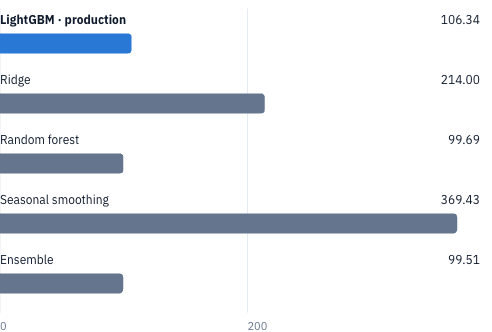

For each task several models were scored on the same data, and the best was marked
| Task | Models tried | What we found |
|---|---|---|
| Forecast | LightGBM, Random Forest, Ensemble, Ridge, Seasonal smoothing | Best: Ensemble, 2.6% water error. Live: LightGBM, 2.8% |
| Detection | Fixed threshold, CUSUM, Isolation Forest, LightGBM classifier | Best in lab: LightGBM classifier, 160 of 160. Live rules: 93% of 212 |
| Early warning | Gradient-boosting failure model with a warning rule | 24 of 24 warned, a median 114 s ahead |
| Leak location | Constrained least squares | Right pipe first in 108 of 108 runs |
| Cost | Monte Carlo, 800 runs | A P10 to P90 range for every price |
| Explanation | gpt-oss-120b on Groq | Explains only; every figure is checked against code |

From the system: forecast error of each model on the same 10 days. Shorter is better.
All data is simulated. A perfect count on a small test is not 100% in general: 160 of 160 means at least 97%, 24 of 24 at least 85%, 108 of 108 at least 96% (95% confidence).